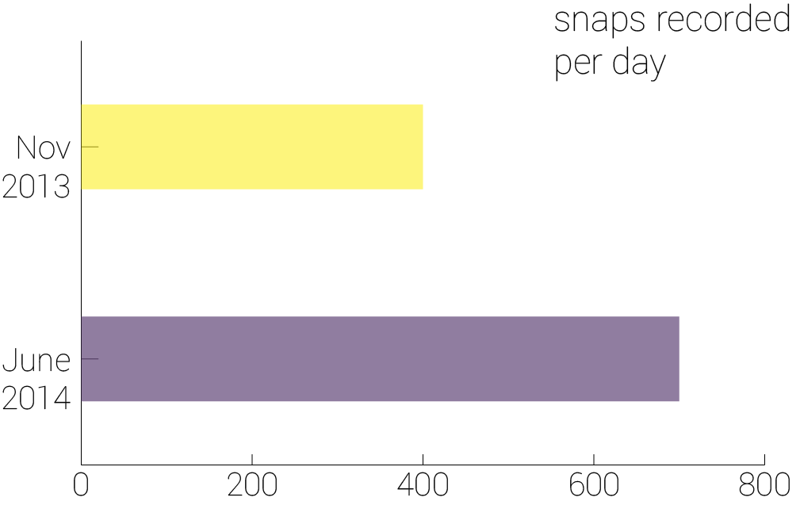

INTRODUCTION: Skyhigh valuations and no revenue


In April 2011 when Stanford student, Evan Speigel floated the idea of a platform for self-destructing images, the idea was immediately dismissed by his classmates. After collaborating with Bobby Murphy and Reggie Brown, three months later, he finally launched the app. Today, the brand they created - Snapchat, comes with a valuation that varies between $15-19 billion. On March 11, 2015, Alibaba was said to be investing in Snapchat with a $15 billion valuation. In February 2015, the rumours for Snapchat’s valuation rested at $19 billion. This is taking into account that until January this year, Snapchat had no source of revenue at all. A portal that was created by millennials, for the millennials, the mobile based social network became the fastest growing mobile app of 2014, according to a study by the Global Web Index. Shortly after that study came out, came out Snapchat Discover, the first step by the company towards revenue. Amidst sky-high valuations, as the company lays down the first step in structuring a business model, here is the making of Snapchat in snaps.
USER GROWTH: millennials = fastest growing social media app

With venture capital backed firms, the idea of numbers is often a secretive affair. When it comes to figures of user growth, Snapchat is not exactly famous to lay down information in the public domain. The last recorded public number came in June 2014, when the company announced that 700 million snaps per day were shared on an average, in addition to 1 billion story views per day. While that was a growth of over 75% from its previus recorded number of 400 million snaps per day in 2013, the number of unique users still remains under the hood. With studies estimating the number to be over 100 million, Snapchat's user base gets stacked against LinkedIn at 200 million and Twitter with 300 million. Snapchat declined to comment on the official user base of the application.
REVENUE: discovering potential revenue streams

When Snapchat introduced stickers, people within the business realm said it was a potential revenue stream. Snapchat didn’t monetize it. After that, when the company introduced the 'Our Story' feature, people again saw that as a move towards a future business plan. As of now, Snapchat hasn’t monetized that either. But then came Discover, and 11 content partners came on board to make it more than just a photo-messaging app. At present Snapchat Discover houses CNN, Comedy Central, Cosmopolitan Magazine, Daily Mail, ESPN, Food Network, National Geographic, People Magazine, Vice, Yahoo News and Warner Music. With the partners varying in the industry they come from, the content ranges from news to music, to entertainment and food. The back end of Discover is a proprietary editorial content management system that lets partners create top snaps (the multimedia teasers above each story), upload video content, and drop in stories. Discover also gives the content publishers access to user analytics - the first entry of any form of analytics in the Snapchat game. If recent reports are to be believed, Snapchat's Speigel has shown interest in exploring the music industry alongside the sports sector. Perhaps, Discover is simply an entry point into potential spaces that the millennial centric app could explore and then exploit for a business model.